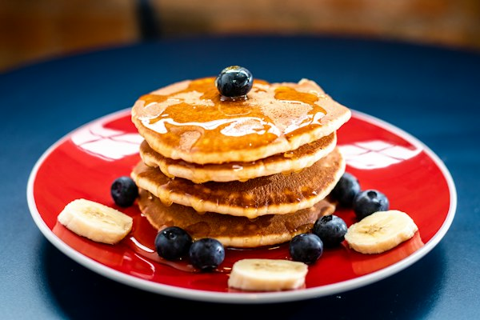
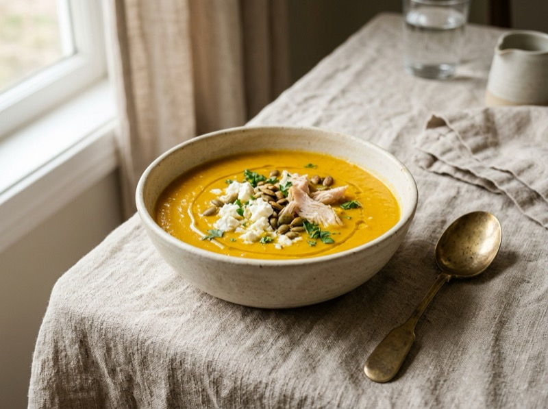
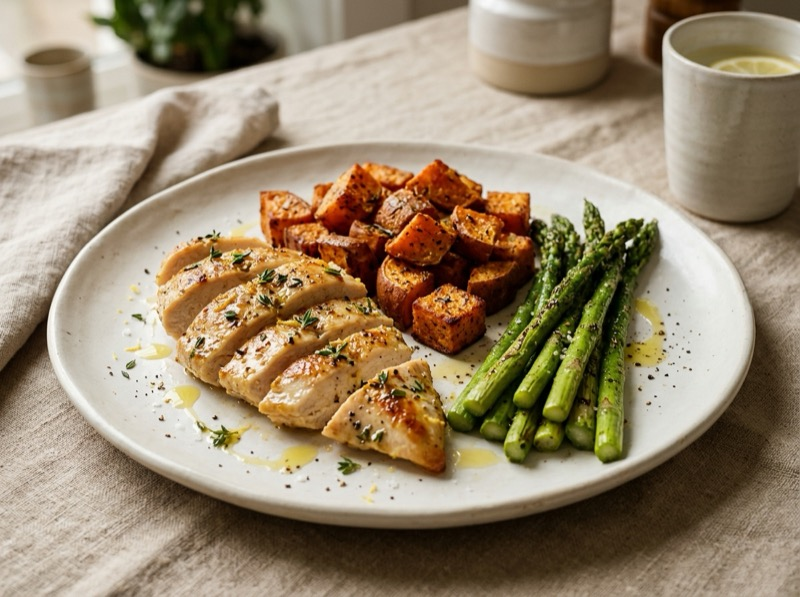
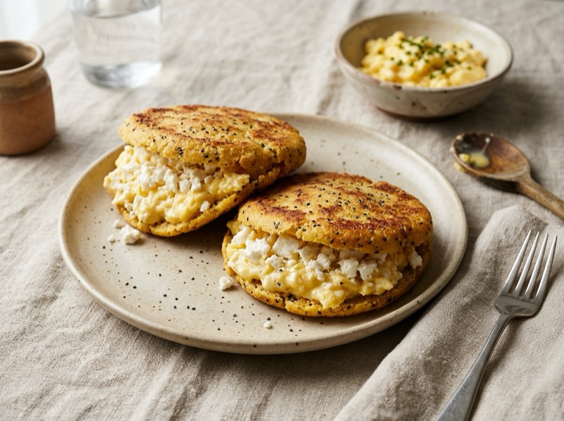

≥ 46 kg
Protocolo de Báscula: ¿Cuándo y Cómo Pesarte?
Sincronización con el ciclo hormonal, DIU Kyleena y retención de líquidos
Estás en el Día 27 del ciclo (Fase Lútea / SPM). Tras ovular y caer la progesterona, el agua extracelular (ECW 42.9%) se acumula en los tejidos. La báscula mostraría falsamente entre +1,0 y +2,5 kg de más que son 100% agua, no grasa.
Fase Folicular (Días 5 a 8 post-regla / reset): Los estrógenos suben de forma limpia, el riñón drena todo el exceso de sodio y el peso refleja con máxima fidelidad tu recomposición real.
Guía Visual de Batch Prep & Despensa
5 módulos independientes diseñados para tu Ninja Foodi, horno y sartenes. Cada cajita cuenta con su propia fotografía real, cantidades exactas y su Paso a Paso Maestro individual para que todo te quede perfecto y sin esfuerzo.

Batch Pancakes AMIX & Avena Esponjosos
Prepara la torre completa en 12 minutos. Guárdalos en tupper hermético y en las mañanas solo tardas 30 segundos en calentarlos en la tostadora.
1. Batido express (45 seg): Pon todo en la batidora o vaso de Minipimer y tritura 45 segundos hasta obtener una crema homogénea y densa.
2. Reposo de 3 minutos (El secreto): Deja reposar la masa mientras calientas la sartén. La avena y la proteína absorben líquido y la levadura activa microburbujas para que queden gorditas.
3. Vuelta y vuelta (1,5 min por lado): Sartén a fuego medio (nivel 6/9) con 2 gotas de AOVE. Vierte 2-3 cdas por pancake. Cuando salgan agujeritos en la superficie, gira y dora 45 segundos.
4. Conservación & Desayuno en 30s: Deja enfriar en un plato y guarda en tupper hermético en la nevera (duran 4–5 días). Cada mañana, saca 2 pancakes y mételos 30 segundos en la tostadora: quedan crujientes por fuera y tiernos por dentro.

Bandeja Dorada & Crema Sedosa
Asa la calabaza, zanahorias, puerro y calabacín en bandeja única con AOVE y sal marina. Tritúralo para tener base de cremas lista.
🥣 Crema Seda + Proteína Moara Guisante (Sin Grumos): Para disolverla perfecto, mezcla en una tacita 1 cda de proteína de guisante con 2 cdas de caldo templado hasta crear una pasta homogénea. Viértela en la crema caliente y remueve 30 seg. ¡Textura seda de restaurante!

Tubérculos & Almidón Resistente
Corta la batata y las patatas guarnición en dados medianos sin pelar para aprovechar toda la fibra prebiótica intacta.
🍠 Crujiente fuera, Tierna dentro: Impregna los dados en un bowl con 1 cdita de AOVE, sal y romero usando las manos. Airfryer a 195°C durante 18–20 min agitando la cesta a mitad. Al enfriar en nevera, su almidón se vuelve resistente (el mejor prebiótico para el colon).

Arepas Doradas con Chía Hidratada
Masa elástica que nunca se rompe gracias a los mucílagos de la chía. Crujientes por fuera, suaves por dentro y listas para rellenar en caliente.
1. Hidratación de la chía (2 min clave): En un bowl pon el agua tibia con la chía y sal. Espera 2 minutos exactos a que suelte su gel protector. Esto evita que la masa se cuartee.
2. Amasado express (1 min):** Añade la harina P.A.N. y amasa con una mano hasta formar una bola suave y elástica que no se pegue a las manos ni al bowl.
3. Formado del disco: Aplana la bola entre tus palmas girando suavemente hasta dejar un disco parejo de 1,5 cm de grosor.
4. Plancha dorada (5 min por lado): Sartén bien caliente a fuego medio con unas gotas de AOVE. Cocina 5 min por lado hasta que al darle toques con los nudillos "suene a hueco".
5. Relleno & Tostadora: Abre por la mitad con cuchillo de sierra y rellena con queso cottage cremoso y pollo o pavo. Si te sobran, guárdalas en nevera y caliéntalas en la tostadora 1 minuto.

Salmón con Piel Hipercrujiente
El truco profesional para que la piel quede crujiente como una galleta y el interior mantecoso y jugoso sin secarse.
1. Secado obsesivo (El secreto): Seca a fondo la piel y la carne del salmón con papel de cocina absorbente. La humedad es la enemiga número uno del crujiente. Espolvorea sal fina en la piel seca.
2. Sartén humeante: Calienta la sartén antiadherente a fuego medio-alto (nivel 7 de 9) con 1 cdita de AOVE bien repartido.
3. Presión inicial de 10 seg: Coloca el lomo con la **piel hacia abajo**. Presiona suavemente con una espátula durante los primeros 10 segundos para que no se arquee y toda la piel quede plana contra el fondo.
4. La Regla de Oro (4–5 min SIN TOCAR): **NO muevas el salmón durante 4 a 5 minutos**. Verás cómo el color rosado sube por los laterales cocinándose y la piel se vuelve una costra rígida dorada.
5. Vuelta express (solo 1,5 min): Gira con cuidado y cocina por el lado de la carne solo **1,5 minutos**. Retira de inmediato al plato. El centro queda jugoso y la piel hipercrocante.
Antojitos Dulces Saludables Anti-PMS
En el día 27 de tu ciclo la caída fisiológica de estrógenos y progesterona reduce la serotonina cerebral. Tus antojos de dulce son bioquímica pura. Satisface el deseo sin inflamar con estos 3 comodines:
Bate 1 yogur griego + 1 cda de cacao puro + 1/2 cazo de proteína AMIX CFM 1 min. Emulsiona como mousse belga. Enfría 10 min.
Dados de manzana al microondas 2 min con canela. Coloca encima 1 onza de chocolate negro (>85%); se funde sola con el vapor.
Taza de leche de avena sin gluten caliente con 1 cdita de cacao puro, canela y cúrcuma. Tómala a las 22:00 h antes del magnesio para relajar el útero.